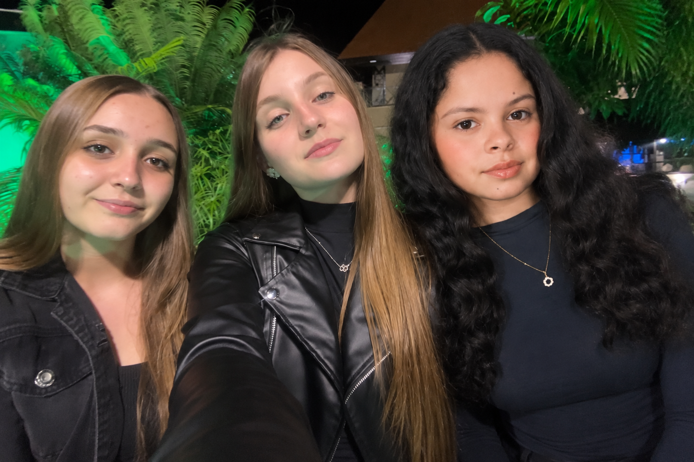

SOBRE NOSSO PROJETO
Somos três mulheres inseridas na área da programação e decidimos unir nossos conhecimentos tecnológicos à ciência para criar o Herbário Virtual Freesia. A proposta nasceu da necessidade de tornar o estudo da Botânica mais acessível, dinâmico e próximo da realidade das novas gerações.
O projeto busca democratizar o acesso ao conhecimento científico, valorizando a biodiversidade e incentivando a educação ambiental. Por meio de uma plataforma interativa, oferecemos recursos como filtros de pesquisa, mecanismos de identificação de espécies e conteúdos educativos, que tornam o aprendizado mais envolvente e significativo.
Nosso trabalho está alinhado aos Objetivos de Desenvolvimento Sustentável da ONU, reforçando o compromisso com uma sociedade mais consciente e sustentável:
ODS 4 – Educação de qualidade e inclusiva
ODS 11 – Cidades e comunidades sustentáveis
ODS 15 – Vida terrestre
Mais do que digitalizar acervos, o Freesia é um espaço de aprendizagem inovador, que aproxima jovens e comunidade da Botânica por meio de recursos interativos como filtros de pesquisa, identificação de espécies e conteúdos educativos.

Sobre Nós
Somos Ana Julia, Camila e Nicoly, estudantes que decidiram unir tecnologia e botânica para criar o Herbário Virtual. Nosso interesse pela programação surgiu da vontade de inovar e tornar a ciência mais acessível. Queremos seguir carreiras ligadas à tecnologia e educação, sempre conectando conhecimento científico com impacto social.